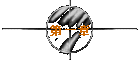
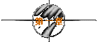

※第一次的亲密接触※
written by jht.

跟她是在网路上认识的。怎么开始的？我也记不清楚了，好像是因为
我的一个plan吧！那个plan是这么写的：
“ 如果我有一千万，我就能买一栋房子。
我有一千万吗？没有。
所以我仍然没有房子。
如果我有翅膀，我就能飞。
我有翅膀吗？没有。
所以我也没办法飞。
如果把整个太平洋的水倒出，也浇不熄我对你爱情的火焰。
整个太平洋的水全部倒得出吗？不行。
所以我并不爱你。
”
其实这只是我的职业病而已。我是研究生，为了要撰写数值程式，
脑子里总是充满了各种逻辑。当假设状况并不成立时，所得到的结
论，便是狗屁。就像去讨论太监比较容易生男或生女的问题一样，
都是没有意义的。在plan里写这些阿里不达的东西，足证我是个极
度枯燥乏味的人，事实上也是如此。所以没有把到任何美眉，以致
枕畔犹虚，倒也在情理之中。
而她，真是个例外。她竟mail告诉我，我是个很有趣的人。有趣？
这种形容词怎么可能用在我身上？就像用诚实来形容李登辉一样，
都会让人笑掉大牙。我想她如果不是智商很低，就是脑筋有问题。
看她的昵称，却又不像，她叫"轻舞飞扬"，倒是个蛮诗意的名字。
不过网路上的昵称总是虚虚实实，虚者实之，实者虚之，做不得准
的。换言之，恐龙绝不会说她是恐龙，更不会说她住在侏罗纪公园
里，她总是会想尽办法去引诱你以及误导你。而优美的昵称，就是
恐龙猎食像我这种纯情少男的最佳武器。
说到恐龙，又勾起了我的惨痛记忆。我见过几个网友，结果是一只
比一只凶恶，每次都落荒而逃，我想我大概可以加入史蒂芬史匹柏
的制作班底，去帮他做电影特效了。室友阿泰的经验和我一样，如
果以我和他所见到的恐龙为Ｘ座标轴，以受惊吓的程度为Ｙ座标轴
，可以经由回归分析而得出一条线性方程式，然后再对Ｘ取偏微分
，对Ｙ取不定积分，就可得到"网路无美女"的定律。因此，理论上
而言，网路上充斥著各种恐龙，所差别的只是到底她是肉食性还是
草食性而已。
要介绍"轻舞飞扬"之前，得先提一提阿泰。打从大学时代起，阿泰
就是我的哥儿们，不过我们的个性却是天南地北。他长得又高又帅
，最重要的是，他有张又甜又油的嘴巴，我很怀疑有任何的雌性动
物能不淹没在他那滔滔不绝的口水之中。我喜欢叫他"Lady
Killer"，
而且他还是职业的。惨死在他手下的女孩，可谓不计其数，受害者
遍及台湾全岛。他在情场上百战百胜，但绝不收容战俘，他说他已
经达到情场上的最高境界，即"万花丛中过，片叶不沾身"。据说这
比徐志摩的"挥一挥衣袖，不带走一片云彩"，还要高竿。徐志摩还
得挥一挥衣袖来甩掉黏上手的女孩子，阿泰则连衣袖都没有了。
阿泰总是说我太老实了，是情场上的炮灰。这也难怪，我既不高又
不帅，鼻子上骑著一支高度近视的眼镜，使我的眼睛看起来眯成一
条线。记得有次上流力课时，老师还突然把我叫起来，因为他怀疑
我在睡觉，而那时我正在专心听讲。可能八字也有关系吧！从小到
大，围绕在我身旁的，不是像女人的男人，就是像男人的女人。阿
泰常说，男人有四种类型：第一种叫"不劳而获"型，即不用去追女
孩子，自然会被倒贴；第二种叫"轻而易举"型，虽然得追女孩子，
但总能轻易掳获芳心；第三种叫"刻苦耐劳"型，必须绞尽脑汁，用
尽36计，才会有战利品；而我是属于第四种叫"自求多福'型，只能
期待碰到眼睛被牛屎ㄍㄡ□到的女孩子。
阿泰其实是很够朋友的，常常会将一些女孩子过户给我，只可惜我
太不争气，总是近"香"情怯。不过这也不能怪我，只因为我多读了
几本圣贤书，懂得礼义廉耻，而讲究礼义廉耻通常是追求女孩子的
兵家大忌。举例来说，我跟一个不算瘦的女孩去喝咖啡，我好心请
她再叫些点心，她却说她怕会变胖，那我就会说你已经来不及了。
去年跟一个女孩子出去吃饭，她自夸朋友们都说她是“天使般的脸
孔，魔鬼般的身材“，我却很正经地告诉她，“你朋友说反了”。
幸好那时我们是吃简餐，我只是被飞来的筷子击中胸前的膻中穴而
已。如果是吃排餐，我想大概会出人命了。
经过了那次死里逃生的经验，我开始领教到恐龙的凶残。后来阿泰
想出了一个逃生守则，即日后跟任何女性网友单独见面时，要带个
call机。我们会互相支援，让call机适时响起，若碰到肉食性恐龙
，就说“宿舍失火了”；若是草食性恐龙，则说“宿舍遭小偷了”
。于是阿泰的房间发生了四次火警，六次遭窃。我比较幸运，只被
偷过五次。
所以在见到"轻舞飞扬"之前，我的心脏其实已经被锻链得很坚强，
即使再碰到恐龙，我的心跳仍能维持每分钟72下。阿泰曾经提醒我
，她如果不是长头发，就会是花痴，因为女孩子在跳舞时只有两个
地方会飞扬：头发和裙子。头发飞扬当然很美；但若裙子飞扬，则
表示她有相当程度的性暗示。不过我一直认为她与众不同，当然我
的意思不是她特别大只。书上说天蝎座的人都会有很敏锐的直觉，
因此我很相信自己的第六感。至于阿泰，他虽然能够一眼看出女孩
子的胸围，并判断出到底是Ａ罩杯还是Ｂ罩杯；或在数天内让女孩
子在床上躺平，但他却未必能真正地了解一个女孩子。
阿泰常引述莎士比亚的名言：“女人是被爱的，不是被了解的”，
来证明了解女人不是笑傲情场的条件。事实上，这句话真的有道理
。记得我以前曾经一男四女住过，真是苦不堪言。生活上的一切细
节，都得帮她们打点，因为女生只知道风花雪月，未必知道柴米油
盐。为了保护她们的贞操，我每天还得晚点名，我若有不轨的举动
，别人会笑我监守自盗；我若守之以礼，别人就叫我柳下惠，或者
递给我一张泌尿科医师的名片。夏天晚上她们洗完澡后，我都得天
人交战一番，可谓看得到吃不到。跟她们住了两年，我只领悟到一
个道理，即是再怎么纯洁可爱温柔天真大方端庄小鸟依人的女孩子
，她们卷起裤管数腿毛的姿势都一样。而且她们都同样会叫我从厕
所的门缝下面塞卫生纸进去。
该让"轻舞飞扬"出场了。自从她头壳坏掉mail给我并说我很有趣后
，我就常希望能在线上碰到她。不过很可惜，我们总是擦身而过，
所以我也只能回mail告诉她，为了证明她有先见之明，我会努力训
练自己成为一个有趣的人。因此我寄mail给她，她回mail给我，我
又回她回给我的mail，她再回我回她回给我的mail，于是应了那句
俗话：“冤冤相报何时了”。虽然说冤家宜解不宜结，不过我和她
的冤仇却是愈结愈深。
其实最让我对她感到兴趣的，也是她的plan：
“ 我轻轻地舞著，在拥挤的人群之中。
你投射过来异样的眼神。
诧异也好，欣赏也罢。
并不曾使我的舞步凌乱。
因为令我飞扬的，不是你注视的目光。
而是我年轻的心。
”
我实在无法将这样的女子与恐龙联想在一起。但如果她真是恐龙，
我倒宁愿让这只恐龙饱餐一顿，正所谓恐龙嘴下死，作鬼也风流。
阿泰好像看出了我的异样，不断地劝我，网路的感情玩玩就好，千
万别当真，毕竟虚幻的东西是见不得阳光的。就让上帝的归上帝，
凯撒的归凯撒；网路的归网路，现实的归现实。因为躲在任何一个
英文ID背后的人，先别论个性好坏或外表美丑，连是男是女都不知
道，如此又能产生什么狗屁爱情？
这不能怪阿泰的薄情与偏激，自从他在20岁那年被他的女友fire后
，他便开始游戏花丛。俗话说：“一朝被蛇咬，十年怕井绳”，他
被蛇咬了以后，却从此学会了剥蛇皮，并喜欢吃蛇肉羹。而且他遇
见的女性网友，倒也不乏一些只寻找短暂刺激之辈，有时第一次见
面就会问他：“君欲上床乎？”。因为子曰：“美女难找，有身材
就好”，所以除了恐龙外，他通常会回答：“但凭卿之所好，小生
岂敢推辞？”。然后她们会问：“Your place or My place？”，
他则爽快地说：“要杀要剐，悉听尊便。重点是跟谁做，而不是在
哪做”。阿泰真狠，连这样也要之乎者也一番，更狠的是，他通常
带她们回到家里，而把我赶出去流落街头。
在一个苦思程式的深夜里，研究室外的那只野猫又发出断断续续的
叫春声，三长一短，表示大约是三点一刻。上线来晃一晃，通常这
时候线上人最少，而且以无聊和性饥渴的人居多，若能碰上一二个
变态的女孩，望梅止渴一番，倒也是件趣事。阿泰说女孩子的心防
愈到深夜愈松懈，愈容易让你轻松挥出安打。
安打？是这样的，我们常以棒球比赛来形容跟女孩间的进展。一垒
表示牵手搭肩；二垒表示亲吻拥抱；三垒则是爱抚触摸；本垒就是
已经※＆＠☆了《基于网路青少年性侵害防治法规定，此段文字必
须以马赛克处理》。阿泰当然是那种常常击出全垒打的人，而我则
是有名的被三振王，到现在还不知道一垒垒包是方还是扁。如果是
被时速140公里以上的快速球三振那也就罢了，我竟然连120公里的
慢速直球也会挥棒落空，真是死不瞑目。
pc刚好在此时传出了当当的声响，太好了！鱼儿上钩了。不知道是
那个痴情怨女从一大堆饥渴的雄性野兽中，没有天理地选择了我为
送Message的对象，我也不知不觉地流下了欣慰的口水。
按照惯例，先双手合十虔诚地向上帝祈祷，求他赐给我一个寂寞难
耐的绝色美女。然后用没擦过屁股的左手按了下键盘，出现的是：
「痞子....这么晚了还没睡？」
哇ㄌㄟ....不会吧!?竟然是"轻舞飞扬"！这个不知是头发飞扬还是
裙子飞扬的女孩。
赶紧将快滴下的口水吸住，做了几下深呼吸。阿泰此时不知道又在
那个无知少女的床上，这么重要的关头，只有我在孤军奋战。早知
如此，今晚就叫他吃素，别杀生了。怎么办？凭我三脚猫的幽默感
和略显痴呆的谈吐，怎么能吸引她呢？
「痞子....我心情不好睡不著....你也是吗？」
「痞子....我心情不好睡不著....你也是吗？」
horse's！ 都怪阿泰不好，干嘛没事叫我取什么"痞子蔡"的昵称，
还说什么这样叫做“置之死地而后生”，反而会达到吸引纯情少女
的反效果。我以前的昵称，诸如："爱你一万年"、"深情的Jack"、
"浪漫是我的绰号"、"敢笑杨过不痴情"、"你敢jump我就jump"....
不也性格地一蹋糊涂？如今竟让她叫我痞子，真是情何以堪啊！
『我心情也不好....让我们负负得正吧！』
好不容易挤出了这么一句，却也已冒出了一身冷汗。其实我心情也
不见得不好，只是顺著她的话头讲，不要刚开始聊天就做出忤逆的
事。而且如果她待会问我为何心情也不好时，我就可以回答：“你
心情不好，我的心情又怎么好得起来？”。虽然有点狗腿，不过阿
泰常说：“狗腿为谈恋爱之本”。而且女孩子是种非常奇怪的动物
，她相信她的耳朵远超过相信她的眼睛，所以与其做十件体贴的事
让她欣慰，倒不如说一句好听的话让她感动。
「好ㄚ！....可是你还没向我问好ㄋㄟ....」
该死！竟然紧张到连做人的基本礼貌都忘了，亏我还号称为系上的
品行教科书以及道德状元郎。如果让学妹们知道这件事，岂不让她
们少了一个暗恋的对象？我真是无颜见江东姐妹了。
待续
| 
 
